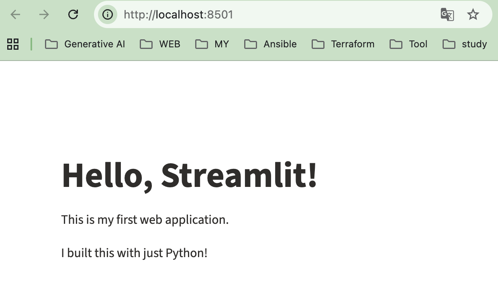
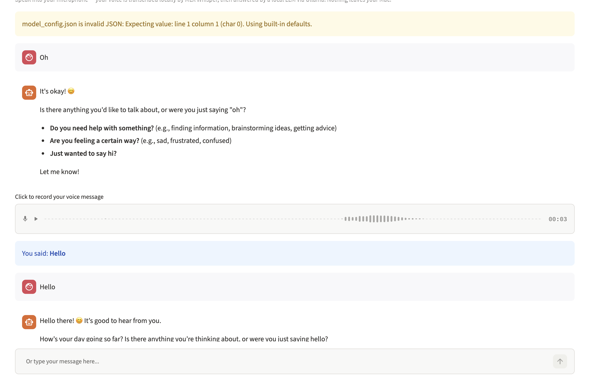
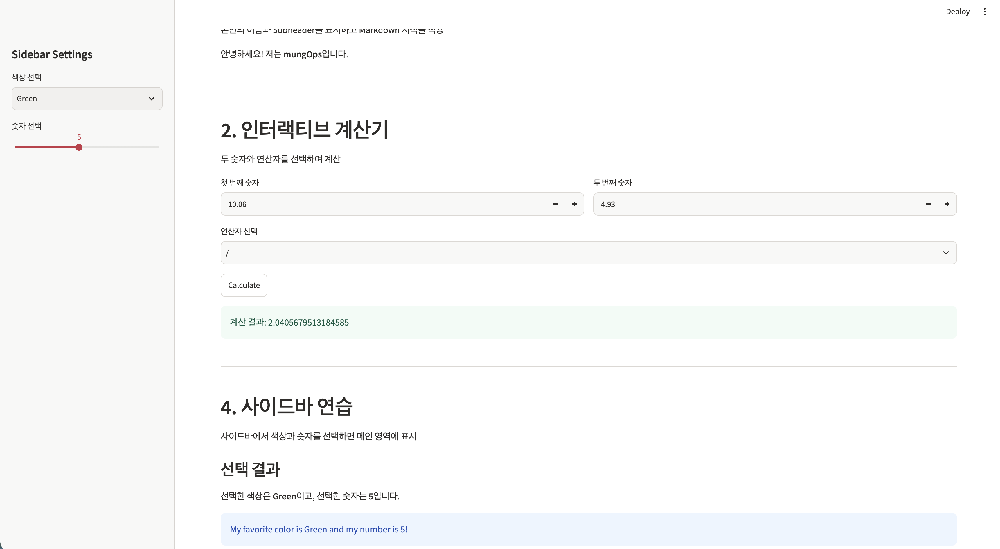

3. Voice-enabled AI chat application
- 이 글은 CloudNet@ 팀 gasida님의 스터디 local ai on mac 내용 및 실습으로 작성된 글입니다.
로컬 AI 스터디 3주차 — 핵심 기술: 첫 AI 챗봇 만들기
Streamlit으로 웹 UI 구축
- Python만으로 웹 애플리케이션을 만들 수 있는 Streamlit의 기본 개념과 사용법을 학습
- Streamlit 이해: Python 스크립트를 인터랙티브한 웹 애플리케이션으로 변환하는 원리
- 기본 앱 개발: Hello World 예제로 첫 웹 애플리케이션 구현
- UI 컴포넌트: 텍스트, 사용자 입력, 버튼, 사이드바 및 레이아웃 활용
- 실행 및 개발: Streamlit 앱 실행 방법과 개발 워크플로 이해
- 핵심 목표: HTML, CSS, JavaScript 없이 Python만으로 Ollama 기반 AI 챗봇과 사용자가 상호작용할 수 있는 웹 인터페이스를 구축
Streamlit
Streamlit이란?
-
Streamlit은 Python 스크립트를 인터랙티브한 웹 애플리케이션으로 변환해 주는 Python 프레임워크입니다. st.title()이나 st.text_input() 같은 Python 함수를 호출하면, Streamlit이 웹 페이지를 자동으로 생성
-
Streamlit은 Python 코드만으로 웹 UI를 자동 생성해 주는 프레임워크이며, 사용자 이벤트에 따라 스크립트가 재실행되는 구조이므로 Session State를 통한 상태 관리가 중요
Streamlit과 일반적인 웹 구조의 차이
- Streamlit 구조
flowchart TB
U["👤 사용자 (Browser)"]
subgraph ST["Streamlit Application"]
direction TB
UI["Streamlit UI Components
화면 구성 및 사용자 입력"]
PY["Python Application Logic
비즈니스 로직 및 API 호출"]
STATE[("Session State
사용자별 상태 관리")]
UI <-->|"이벤트 및 화면 갱신"| PY
PY <-->|"상태 저장 / 조회"| STATE
end
subgraph DATA["External Services"]
direction LR
AI["Ollama / LLM
AI 추론"]
DB[("Database
데이터 저장")]
EXT["External API
외부 서비스 연동"]
end
U <-->|"HTTP / WebSocket"| UI
PY <-->|"API 호출"| AI
PY <-->|"DB Query"| DB
PY <-->|"HTTP Request"| EXT
classDef user fill:#334155,stroke:#64748b,color:#fff,stroke-width:2px
classDef ui fill:#7c3aed,stroke:#a78bfa,color:#fff,stroke-width:2px
classDef logic fill:#0369a1,stroke:#38bdf8,color:#fff,stroke-width:2px
classDef state fill:#0f766e,stroke:#2dd4bf,color:#fff
classDef ai fill:#15803d,stroke:#4ade80,color:#fff
classDef db fill:#475569,stroke:#94a3b8,color:#fff
classDef ext fill:#b45309,stroke:#fbbf24,color:#fff
class U user
class UI ui
class PY logic
class STATE state
class AI ai
class DB db
class EXT ext
style ST fill:#f5f3ff,stroke:#8b5cf6,stroke-width:2px,color:#4c1d95
style DATA fill:#f0fdf4,stroke:#16a34a,stroke-width:2px,color:#14532d- 일반적인 웹 구조
flowchart TB
U["👤 사용자 (Browser)"]
subgraph FE["Frontend"]
direction TB
HTML["HTML
웹 페이지 구조"]
CSS["CSS
디자인 및 스타일"]
JS["JavaScript
사용자 상호작용"]
HTML --- CSS
HTML --- JS
end
subgraph BE["Backend"]
direction TB
API["API Server
HTTP Request 처리"]
LOGIC["Business Logic
애플리케이션 로직"]
AUTH["Authentication / Authorization
인증 및 권한 관리"]
API --> LOGIC
LOGIC --> AUTH
end
subgraph DATA["External Services"]
direction LR
DB[("Database
데이터 저장")]
AI["AI Model / Ollama
AI 추론"]
EXT["External API
외부 서비스 연동"]
end
U <-->|"웹 페이지 제공"| HTML
JS <-->|"HTTP / REST API"| API
LOGIC <-->|"DB Query"| DB
LOGIC <-->|"API 호출"| AI
LOGIC <-->|"HTTP Request"| EXT
classDef user fill:#334155,stroke:#64748b,color:#fff,stroke-width:2px
classDef html fill:#2563eb,stroke:#60a5fa,color:#fff
classDef css fill:#0891b2,stroke:#67e8f9,color:#fff
classDef js fill:#b45309,stroke:#fbbf24,color:#fff
classDef api fill:#0f766e,stroke:#2dd4bf,color:#fff
classDef logic fill:#0369a1,stroke:#38bdf8,color:#fff
classDef auth fill:#7c3aed,stroke:#c4b5fd,color:#fff
classDef db fill:#475569,stroke:#94a3b8,color:#fff
classDef ai fill:#15803d,stroke:#4ade80,color:#fff
classDef ext fill:#b45309,stroke:#fbbf24,color:#fff
class U user
class HTML html
class CSS css
class JS js
class API api
class LOGIC logic
class AUTH auth
class DB db
class AI ai
class EXT ext
style FE fill:#eff6ff,stroke:#3b82f6,stroke-width:2px,color:#1e3a8a
style BE fill:#ecfeff,stroke:#0891b2,stroke-width:2px,color:#164e63
style DATA fill:#f0fdf4,stroke:#16a34a,stroke-width:2px,color:#14532d| 비교 | 일반적인 웹 개발 | Streamlit |
|---|---|---|
| UI | HTML / CSS / JS | Streamlit 컴포넌트 |
| 애플리케이션 로직 | Backend Server | Python |
| 프론트-백엔드 통신 | HTTP / REST API 등 | Streamlit 내부 통신 |
| 상태 관리 | 별도 구현 | Session State |
| 개발 구조 | 프론트엔드와 백엔드 분리 가능 | 하나의 Python 앱 중심 |
Streamlit의 실행 모델
- Streamlit은 기본적으로 사용자 이벤트가 발생하면 Python 스크립트를 처음부터 끝까지 다시 실행(Rerun)
- 일반적인 Python 프로그램은 보통 코드를 한 번 실행하고 종료하거나, 별도의 반복문을 통해 입력을 처리
- Streamlit은 웹 UI와 Python 코드의 상태를 동기화하기 위해 이벤트가 발생할 때마다 스크립트를 재실행
flowchart TB
U["👤 사용자 (Browser)"]
U --> FE
U --> ST
subgraph GENERAL["① 일반적인 웹 개발"]
direction TB
FE["Frontend
HTML / CSS / JavaScript"]
API["Backend API Server
Python / Java / Node.js"]
LOGIC["Business Logic"]
DB1[("Database")]
FE <-->|"HTTP / REST API"| API
API --> LOGIC
LOGIC <--> DB1
end
subgraph STREAMLIT["② Streamlit 실행 모델"]
direction TB
UI["Streamlit UI
st.title / st.button / st.chat_input"]
EVENT{"사용자 이벤트 발생"}
RERUN["Python Script
전체 재실행 (Rerun)"]
STATE[("Session State
사용자별 상태 유지")]
CACHE[("Cache
반복 작업 결과 재사용")]
OLLAMA["Ollama API / LLM"]
UI --> EVENT
EVENT -->|"입력 / 클릭"| RERUN
RERUN <--> STATE
RERUN <--> CACHE
RERUN <--> OLLAMA
RERUN --> UI
end
classDef user fill:#334155,stroke:#64748b,color:#fff,stroke-width:2px
classDef frontend fill:#2563eb,stroke:#60a5fa,color:#fff
classDef backend fill:#0f766e,stroke:#2dd4bf,color:#fff
classDef logic fill:#0d9488,stroke:#5eead4,color:#fff
classDef database fill:#475569,stroke:#94a3b8,color:#fff
classDef streamui fill:#7c3aed,stroke:#c4b5fd,color:#fff
classDef event fill:#b45309,stroke:#fbbf24,color:#fff
classDef rerun fill:#be123c,stroke:#fb7185,color:#fff
classDef state fill:#0369a1,stroke:#38bdf8,color:#fff
classDef cache fill:#4338ca,stroke:#818cf8,color:#fff
classDef ollama fill:#15803d,stroke:#4ade80,color:#fff
class U user
class FE frontend
class API backend
class LOGIC logic
class DB1 database
class UI streamui
class EVENT event
class RERUN rerun
class STATE state
class CACHE cache
class OLLAMA ollama
style GENERAL fill:#eff6ff,stroke:#3b82f6,stroke-width:2px,color:#1e3a8a
style STREAMLIT fill:#f5f3ff,stroke:#8b5cf6,stroke-width:2px,color:#4c1d95
Streamlit 설치 및 실행
- 설치방법
(env) mung 😎 ~/Documents/model/streamlit pip install streamlit
Collecting streamlit
Downloading streamlit-1.67.0-py3-none-any.whl.metadata (10 kB)
Collecting altair!=5.4.0,!=5.4.1,<7,>=5.0.0 (from streamlit)
Downloading altair-6.3.0-py3-none-any.whl.metadata (11 kB)
...
...- 실행
- 일반 Python 스크립트와 달리 python app.py로 실행하지 않습니다. Streamlit에는 전용 명령어가 존재
(env) ✘ mung 😎 ~/Documents/model/streamlit streamlit --help
Usage: streamlit [OPTIONS] COMMAND [ARGS]...
Try out a demo with:
$ streamlit hello
Or use the line below to run your own script:
$ streamlit run your_script.py
Options:
--log_level [error|warning|info|debug]
--version Show the version and exit.
--help Show this message and exit.
Commands:
activate Activate Streamlit by entering your email.
cache Manage the Streamlit cache.
config Manage Streamlit's config settings.
docs Look up a Streamlit command, or open the docs in your browser.
hello Runs the Hello World script.
help Print this help message.
init Initialize a new Streamlit project.
run Run a Python script, piping stderr to Streamlit.
skills Install Streamlit AI-agent skills.
version Print Streamlit's version number.
(env) mung 😎 ~/Documents/model/streamlit streamlit run app.py
2026-11-08 20:40:59.363 Uvicorn server started on :::8501
You can now view your Streamlit app in your browser.
Local URL: http://localhost:8501
Network URL: http://10.1.0.4:8501
Help agents write better Streamlit apps?
Install the official Streamlit skills by running streamlit skills in your terminal.
For better performance, install the Watchdog module:
$ xcode-select --install
$ pip install watchdog

- 수집 정보 비활성화
- gatherUsageStats = false는 사용 통계 전송만 차단하며, 챗봇의 대화 기록이나 로컬 데이터 저장과는 무관
- 외
streamlit config show에서 추가 설정 확인이 가능
cat << EOF > ~/.streamlit/config.toml
[browser]
gatherUsageStats = false
EOF
- Streamlit widget
- Streamlit의 위젯(Widget)은 사용자가 웹 애플리케이션과 상호작용할 수 있도록 제공하는 UI 컴포넌트
- https://docs.streamlit.io/develop/api-reference/widgets?utm_source=chatgpt.com
MLX Whisperf
- MLX Whisper는 Apple Silicon(M1, M2, M3, M4 등) Mac에서 음성 인식(STT, Speech-to-Text)을 로컬로 실행할 수 있도록 만든 기술
- 마이크로 녹음한 음성을 AI가 분석해서 텍스트로 변환해 주는 도구
음성인식 (ASR: Automatic Speech Recognition)
-
ASR(Automatic Speech Recognition)은 사람의 음성을 텍스트로 변환하는 기술
-
기존 음성 인식 기술의 한계
- 초기 음성 인식 시스템은 사람이 직접 정의한 음소(Phoneme) 규칙과 통계 모델을 기반으로 동작
- 작고 제한적인 데이터셋으로 학습했기 때문에 실제 환경에서 다양한 발음과 억양을 처리하는 데 한계가 있었
- 음소(Phoneme)란 언어에서 의미를 구별하는 가장 작은 소리 단위
MLX Whisperf 동작과정
| 단계 | 과정 | 설명 |
|---|---|---|
| 1 | 오디오 입력 | 마이크 또는 오디오 파일을 통해 음성 입력 |
| 2 | 스펙트로그램 변환 | Mel Filterbank 기반의 스펙트로그램으로 변환하여 시간과 주파수 정보 표현 |
| 3 | Encoder 처리 | 스펙트로그램에서 음향적 특징 추출 |
| 4 | Decoder 처리 | Encoder 출력과 언어 및 작업을 지정하는 Special Token 활용 |
| 5 | 텍스트 생성 | 분석 결과를 바탕으로 음성을 텍스트로 변환 |
관련 용어정리
| 용어 | 설명 |
|---|---|
| Phoneme | 음소, 의미를 구별하는 최소 소리 단위 |
| Spectrogram | 시간에 따른 소리의 주파수 표현 |
| Mel Filterbank | 사람의 청각 특성을 반영해 주파수 정보를 변환하는 방식 |
| Encoder | 음성 데이터에서 특징 추출 |
| Decoder | 추출된 특징을 바탕으로 텍스트 생성 |
| Special Token | 언어 및 작업 유형 등을 지정하는 제어 정보 |
MLX Whisperf 사용
-
녹음 및 받아쓰기
-
녹음
import sounddevice as sd
import numpy as np
import scipy.io.wavfile as wavfile
from pathlib import Path
SAMPLE_RATE = 16000 # SAMPLE_RATE = 16000
DURATION = 5 # DURATION = 5
OUTPUT_FILE = Path(__file__).with_name("recording.wav")
def record(duration: float, sample_rate: int = SAMPLE_RATE) -> np.ndarray:
"""Record audio from the default microphone.
Returns a 1D float32 NumPy array (a Python data structure that efficiently stores and processes lists of numbers) of audio samples.
"""
print(f"Recording for {duration} seconds... (speak now)")
audio = sd.rec(
int(duration * sample_rate),
samplerate=sample_rate,
channels=1,
dtype="float32",
)
sd.wait() # Block until recording is complete.
print("Done recording.")
return audio.squeeze() # Remove the channel dimension: (N,1) -> (N,).
def save_wav(audio: np.ndarray, path: str, sample_rate: int = SAMPLE_RATE) -> None:
"""Save a float32 audio array to a WAV file."""
# WAV files use int16; scale float32 [-1.0, 1.0] to int16 range
audio_int16 = (audio * 32767).astype(np.int16)
wavfile.write(path, sample_rate, audio_int16)
print(f"Saved to {path}")
if __name__ == "__main__":
audio = record(DURATION)
save_wav(audio, OUTPUT_FILE)- 받아쓰기
import mlx_whisper
from pathlib import Path
AUDIO_FILE = Path(__file__).with_name("recording.wav")
WHISPER_MODEL = "mlx-community/whisper-small-mlx"
LANGUAGE = "ko" # None이면 Whisper가 언어를 자동 감지
def transcribe(audio_path: str, model: str = WHISPER_MODEL, language: str | None = LANGUAGE) -> str:
"""Transcribe an audio file and return the text."""
if not Path(audio_path).is_file():
raise FileNotFoundError(
f"Audio file not found: {audio_path}. Run python record.py first."
)
print(f"Transcribing with {model.split('/')[-1]}...")
result = mlx_whisper.transcribe(
str(audio_path),
path_or_hf_repo=model,
language=language,
)
return result["text"].strip()
if __name__ == "__main__":
text = transcribe(AUDIO_FILE)
print(f"\nTranscript:\n{text}")
음성 기반 AI 챗봇 구현
전체 동작 프로세스
- 사용자의 음성을 텍스트로 변환(STT)한 뒤 Ollama LLM에 전달하고, 생성된 응답을 실시간으로 출력하는 구조
flowchart TB
U["🎙️ 사용자 음성 입력"]
subgraph ST["Streamlit Application"]
direction TB
AUDIO["st.audio_input()"]
TRANS["MLX Whisper
음성 → 텍스트 (STT)"]
HANDLER["handle_user_message()
메시지 처리"]
STREAM["stream_response()
응답 스트리밍"]
AUDIO --> TRANS --> HANDLER --> STREAM
end
subgraph AI["Local AI Environment"]
OLLAMA["Ollama API
ollama.chat()"]
LLM["Local LLM
응답 생성"]
OLLAMA <--> LLM
end
UI["💬 Streamlit 화면 출력"]
U --> AUDIO
HANDLER <-->|"대화 메시지 전달"| OLLAMA
STREAM --> UI
classDef user fill:#334155,stroke:#64748b,color:#fff
classDef process fill:#0369a1,stroke:#38bdf8,color:#fff
classDef ai fill:#15803d,stroke:#4ade80,color:#fff
classDef output fill:#7c3aed,stroke:#a78bfa,color:#fff
class U user
class AUDIO,TRANS,HANDLER,STREAM process
class OLLAMA,LLM ai
class UI output
style ST fill:#eff6ff,stroke:#3b82f6,stroke-width:2px
style AI fill:#f0fdf4,stroke:#16a34a,stroke-width:2px주요 구성 요소 및 함수
| 구성 요소 / 함수 | 역할 |
|---|---|
| Streamlit | 웹 UI 및 사용자 입력 처리 |
| MLX Whisper | 음성을 텍스트로 변환(STT) |
| Ollama | 로컬 LLM 실행 및 관리 |
st.audio_input() |
음성 녹음 |
mlx_whisper.transcribe() |
음성 파일 텍스트 변환 |
ollama.chat() |
LLM 호출 및 응답 생성 |
st.session_state |
대화 기록 및 상태 유지 |
stream_response() |
응답 실시간 출력 |
handle_user_message() |
사용자 메시지 통합 처리 |
핵심 구현 개념
-
입력 통합: 음성 및 텍스트 입력을 동일한
handle_user_message()함수로 처리한다. -
Streaming: LLM 응답을 생성되는 순서대로 화면에 출력한다.
-
임시 파일 관리:
tempfile.NamedTemporaryFile()로 음성을 저장하고finally에서os.unlink()로 삭제한다. -
설정 분리: JSON 파일에서 모델, Temperature, Context Size 등을 관리한다.
-
상태 표시:
st.spinner()로 음성 인식 등 처리 진행 상황을 표시한다. -
LLM은 기본적으로 Stateless 구조이다.
- 이전 API 요청 내용을 자동으로 기억하지 않는다.
- 매 요청마다 필요한 대화 기록을 함께 전달해야 한다.
- 애플리케이션이 대화 기록을 저장하고 관리한다.
-
Session State 동작 구조
- Streamlit은 사용자 상호작용이 발생하면 Python 스크립트를 다시 실행한다. 일반 변수는 초기화되지만
st.session_state는 세션이 유지되는 동안 데이터를 보존한다.
- Streamlit은 사용자 상호작용이 발생하면 Python 스크립트를 다시 실행한다. 일반 변수는 초기화되지만
flowchart TB
USER["👤 사용자 입력"]
EVENT["Streamlit 이벤트 발생"]
RERUN["Python 스크립트 재실행"]
subgraph APP["Streamlit Application"]
direction TB
INIT["Session State 확인"]
MSG["사용자 메시지 추가"]
HISTORY[("st.session_state.messages
대화 기록 저장")]
RENDER["대화 기록 화면 출력"]
INIT --> MSG
MSG <--> HISTORY
HISTORY --> RENDER
end
LLM["🤖 Ollama LLM
대화 기록 전달 및 응답 생성"]
USER --> EVENT --> RERUN --> INIT
HISTORY <-->|"Messages 전달"| LLM
LLM -->|"AI 응답 저장"| HISTORY
classDef user fill:#334155,stroke:#64748b,color:#fff
classDef process fill:#0369a1,stroke:#38bdf8,color:#fff
classDef state fill:#0f766e,stroke:#2dd4bf,color:#fff
classDef ai fill:#15803d,stroke:#4ade80,color:#fff
class USER user
class EVENT,RERUN,INIT,MSG,RENDER process
class HISTORY state
class LLM ai
style APP fill:#eff6ff,stroke:#3b82f6,stroke-width:2px
주요 코드
- Session State 초기화
if "messages" not in st.session_state:
st.session_state.messages = []- 사용자 메시지 저장
st.session_state.messages.append({
"role": "user",
"content": user_input
})- LLM에 대화 기록 전달
ollama.chat(
model=model,
messages=st.session_state.messages
)messages에 이전 대화 기록을 함께 전달한다.- 모델은 전달받은 문맥을 기반으로 답변한다.
- 대화 기록을 유지하고 전달하는 역할은 애플리케이션이 담당한다.
Context Window
-
LLM이 하나의 요청에서 처리할 수 있는 최대 토큰 수이다.
-
포함되는 데이터
- System Prompt
- 이전 사용자 메시지 및 AI 응답
- 현재 사용자 입력
- 생성할 응답에 필요한 토큰 공간
-
특징
- 모델마다 최대 Context Window가 다르다.
- 대화가 길어질수록 토큰 사용량과 처리 시간이 증가할 수 있다.
- 한국어는 문자 수만으로 토큰 수를 정확하게 예측하기 어렵다.
- Ollama의
prompt_eval_count로 입력 프롬프트의 토큰 수를 확인할 수 있다.
대화 기록 관리 방법
flowchart TB
HISTORY[("💬 전체 대화 기록")]
HISTORY --> SELECT{"대화 기록 관리 방법"}
SELECT --> TRIM["Trimming
최근 대화만 유지"]
SELECT --> SUMMARY["Summarization
과거 대화 요약"]
SELECT --> RAG["RAG
관련 대화 검색"]
TRIM --> CONTEXT["LLM 입력 문맥 구성"]
SUMMARY --> CONTEXT
RAG --> CONTEXT
CONTEXT --> LLM["🤖 Ollama LLM"]
classDef history fill:#0f766e,stroke:#2dd4bf,color:#fff
classDef method fill:#0369a1,stroke:#38bdf8,color:#fff
classDef output fill:#15803d,stroke:#4ade80,color:#fff
class HISTORY history
class SELECT,TRIM,SUMMARY,RAG,CONTEXT method
class LLM output| 방법 | 설명 | 특징 |
|---|---|---|
| Trimming | 최근 대화만 전달 | 간단하지만 과거 정보 손실 |
| Summarization | 오래된 대화를 요약 | 핵심 정보 유지 가능 |
| RAG | 관련 대화를 검색하여 전달 | 필요한 정보만 선택적으로 활용 |
Trimming 구현 예시
max_messages = max_history * 2 + 1
messages_for_model = st.session_state.messages[-max_messages:]- 전체 대화 기록은 유지한다.
- LLM에는 최근 메시지만 전달한다.
- 오래된 메시지는 현재 모델 문맥에서 제외된다.

핵심 내용 종합
| 구분 | 핵심 개념 |
|---|---|
| 웹 UI 구축 | Streamlit + Python |
| 실행 방식 | 사용자 이벤트 발생 시 Script Rerun |
| UI 구성 | Streamlit Widgets |
| 상태 관리 | st.session_state |
| 반복 작업 최적화 | Streamlit Cache |
| 음성 인식 | MLX Whisper + ASR |
| 음성 처리 | Audio → Spectrogram → Encoder → Decoder → Text |
| AI 응답 | Ollama + Local LLM |
| 실시간 출력 | Streaming |
| 대화 기록 | Messages History |
| LLM 동작 방식 | Stateless |
| 문맥 관리 | Context Window |
| 대화 최적화 | Trimming / Summarization / RAG |
| 대화 초기화 | Clear Chat + Confirmation |
핵심 개념 정리
- Streamlit: Python만으로 웹 UI를 구축하며, 사용자 이벤트가 발생하면 스크립트 전체가 재실행된다.
- Session State: Streamlit 재실행 과정에서도 사용자별 세션 데이터를 유지한다.
- MLX Whisper: Apple Silicon에서 음성을 텍스트로 변환하는 로컬 STT 기술이다.
- 음성 AI 챗봇: 음성 입력 → Whisper STT → Ollama LLM → 응답 스트리밍 순서로 동작한다.
- Stateless LLM: LLM은 이전 대화를 자동으로 기억하지 않으므로 애플리케이션이 대화 기록을 저장하고 매 요청마다 전달해야 한다.
- Context Window: 모델이 한 번에 처리할 수 있는 토큰 수에는 한계가 있다.
- 대화 최적화: Trimming, Summarization, RAG를 활용하여 대화 문맥을 효율적으로 관리한다.
도전 과제
-
챕터 별 연습문제 풀기

-
앞으로의 계획
- MLX Whisperf 사용하여 짝퉁 듀오링고 만들어보기
- minio s3 LLM 붙여보기 (minio client - Lens처럼)